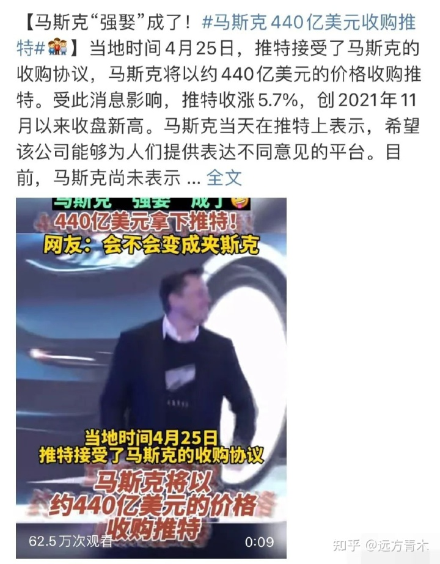
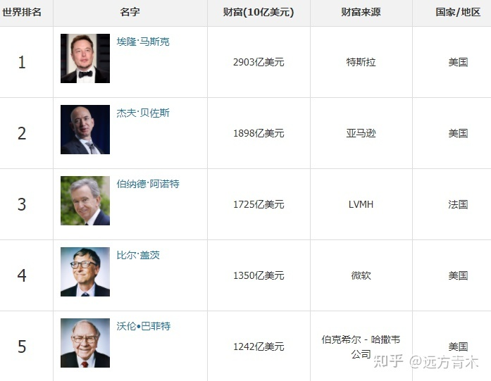
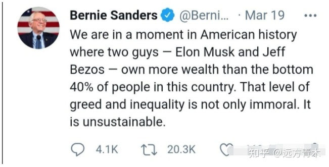
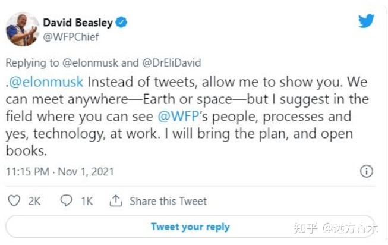
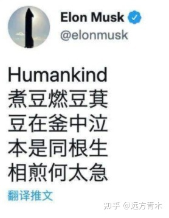
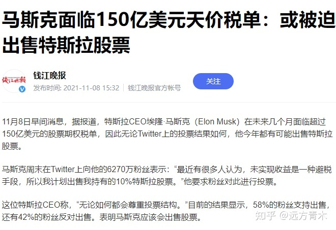
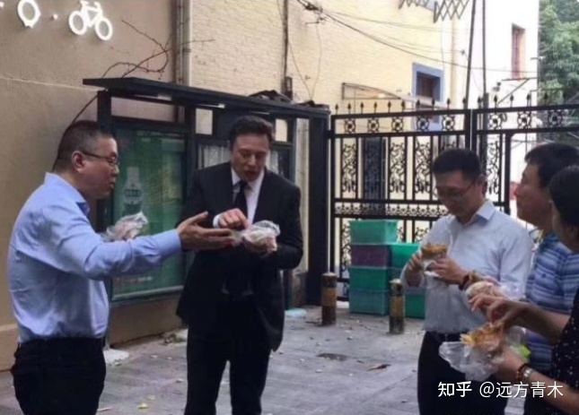
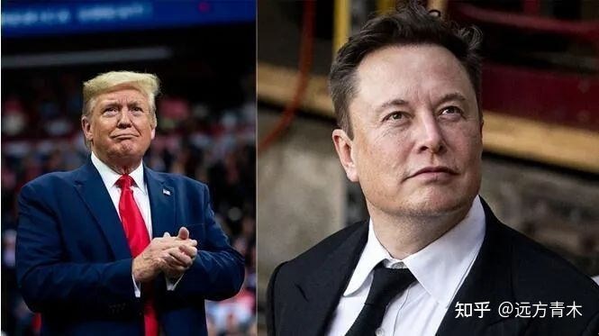
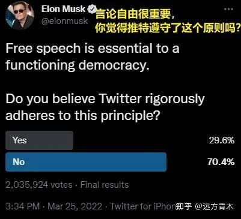
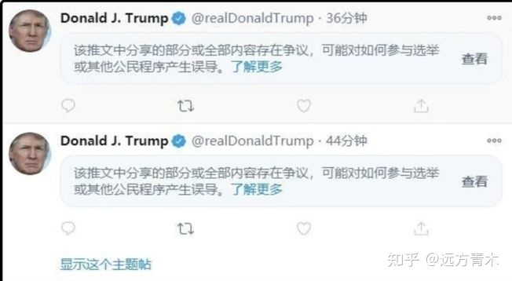

440亿美元买下推特后，还有谁敢逼马斯克纳税？
440亿美元买下推特后，还有谁敢逼马斯克纳税？
人类互联网舆论界历史性的一天出现了。
全球首富马斯克决定以440亿美元收购推特100%的股份，将推特这个舆论平台完全私有化，而推特公司董事会已经正式同意。

推特2013年上市时的发行价是41美元，结果到了9年后的2022年3月初，股价变成了33美元，股东亏损惨重。
很明显推特是一个亏钱的公司，买入推特的股权并不是一个好生意，不然别人早就买了。
4月14日，马斯克突然提出愿意按54.2美元的价格收购推特全部股份，远高于现价，这让很多推特股东欣喜若狂，同时也震动了全世界。
对于马斯克的收购提议，推特董事会坚决反对。
4月16日，推特管理层宣布启动“毒丸计划”，大概意思就是说授予除马斯克之外的所有推特股东超低价购股份的权力，让所有人都可以低价买股票，只有马斯克必须高价买，这会让马斯克收购推特的成本高上好几倍。
毒丸计划经常用于抵制收购，效果非常之好，但对本身毒性也很大，会让别人以后对这家公司的股权望而却步，等于自己吞下了毒丸，所以这种操作模式被称之为毒丸计划。
但马斯克直接拿出了融资计划表，当推特的大小股东看到马斯克账上已经准备好了100~150亿，还通过股份质押，杠杆借贷等方式筹集资金，总共准备了约450亿美元，收购推特股份不是没事开玩笑之后。
股东们沸腾了，纷纷给推特董事会打电话施压，要求他们接受马斯克的收购邀约，连推特创始人都出来发言，说自己相信马斯克可以带领推特走向辉煌。
4月26日，推特董事会达成决议，接受马斯克的收购，整个公司总共计价440亿美元。
马斯克出的价格要远高于市场价，而且总额高达440亿美元之巨，将整个推特归于自己一人所有，为什么马斯克要耗费那么大代价买推特？
如果买推特有利可图，为什么别人不买？因为别人买推特确实是亏钱的，但对于马斯克来说却是赚钱的。
这一切的改变，都始于2021年3月到11月。
当时，马斯克遭到了铺天盖地的舆论攻击。因为特斯拉股价的持续暴涨，马斯克的身家持续攀升，从几十亿到几百亿再到几千亿。
在最新的全球富豪排行榜上，马斯克的身家达到了2903亿美元之多，约合1.9万亿人民币，人类第一首富，且远超第二名。

马斯克如此有钱，但却没有怎么纳税，纳税额相对于本身财富而言非常非常的小，近乎于零。
都说美国税务局天下无双，为何看着马斯克光明正大的不纳税？
因为马斯克的所有财富都在股票上，甚至没怎么给自己开工资，连工资税都免了。
马斯克持有特斯拉股票的成本很低，都是原始股或激励股票，如果卖出后获得盈利需要缴纳超高额的所得税。
但，马斯克不卖股票，始终持有。
按美国法律，创始人和大股东低价持有的股票，如果一直不卖，那是不可以收所得税的。
道理也很简单，股价是有波动的，而且波动很剧烈。
从10块钱涨到100块钱，确实盈利巨大，卖出后确实需要收所得税，但如果不卖出你就收别人这个税。。。
那我问你，如果有朝一日股价跌了，比如说跌到了50块，那你这个税是不是就多收了？那你税务局是不是要退税？
股价一天波动一次，涨跌个3%和玩一样，马斯克3000亿美元身家，3%就是100亿，哪怕按20%的所得税率算，那涉及的税款都是20亿美元。
今天特斯拉股价涨了，马斯克打给税务局20亿美元，明天特斯拉股价跌了，税务局打给马斯克20亿美元，这不是开玩笑嘛。
要是对所有人都实行这个规则，行政成本就会把政府搞崩，所以要等他们把股票卖掉，收益锁定不会改变之后再收所得税。
所以，马斯克这属于典型的合法避税，只拿股票不领工资，而且股票也不卖出，所以你确实一分钱税都收不到。
马斯克需要钱了，就拿股权去质押，不愁钱花。
当然这种合法避税也是有代价的，因为你股票高度集中在一家公司，不能卖出不能换股，所以命运和这家公司高度绑定，如果有朝一日特斯拉破产了，那马斯克所有的财富都是纸面富贵，连1美元都不如。
这种模式支撑了美国股市，侧面激励了富人全身心保护自己公司的股价，所以美国社会长期以来容忍了这种做法。
但是到马斯克这里失效了。
马斯克崛起的速度太快了，10年前马斯克还只是个小富豪而已，10年后身家碾压了全球所有富人，而在这个过程中马斯克几乎不进行任何消费和变现，吃穿住行都是中产水平，手里全是特斯拉股票，需要钱的时候甚至直接把自己房子都卖掉了，宁可现在租房住也不卖手里的原始股。
这种极度抠门的行为导致税务局在马斯克身上完全收不到税。
虽然美国富豪都合法避税，但是千亿美元级以上富豪里马斯克的纳税额是最低的，远远低于其他人。
没人像马斯克暴富速度这么快，也没人像马斯克这样完全不消费，其他富豪多多少少都会卖点股票改善下生活，而卖原始股的时候不可避免的要交所得税。
马斯克曾公开表示：
“我没有从公司获得任何现金收入，不卖股票就无法交税，那我该怎么办呢？把我股份送给政府吗？”
2019年特斯拉开给马斯克的年薪为23760 美元，月薪约合2000美元，没有通过出售股票获得任何收益，妻子也没有收入，同时两个人还养着7个孩子，严格按照美国法律搞法治社会的话，美国政府甚至还要倒过来给马斯克发贫困补贴和生育津贴。
但马斯克是实打实的人类第一富豪。虽说马斯克的行为完全合法，但身为世界首富纳税额居然低到近乎于零，这让很多人抓住了由头，对马斯克发起了舆论攻击。
2021年3月19日，美国佛蒙特州参议员伯尼率先在推特上对马斯克发起了舆论攻势，说马斯克和贝索斯拥有的财富超过40%底层人民总和，并指责其行为极度贪婪、不道德，是不可持久的。

2021年中下旬，联合国官员比斯利多次逼捐马斯克，说只要马斯克捐出2%的财富，也就是60亿美元，那就可以挽救4200万人的生命，如果马斯克不捐，那这可怜的4200万人就会死。

这种逼捐行为只需要动动嘴皮子，如果马斯克捐钱了那功劳全是自己的，声望大涨，如果马斯克不捐也自己也毫无损失，甚至还能捞一点爱心形象，而马斯克捐了也没功劳，不捐更是瞬间成了黑心富人。
这种百利无一害的事情自然很多人想做，于是逼捐马斯克成了一股网络浪潮。
发酵了半年的舆论浪潮最后成型，多名政客呼吁对亿万富翁收税，哪怕股票不卖也要收税，舆论声浪之大让贝索斯等富豪自己都扛不住，也跟着说希望对自己征收。
2021年11月，美国国会开始对亿万富豪进行征税讨论，预估第一步就要对马斯克征收150亿美元的税款。
2021年11月2日，马斯克突然在推特上用中文发布了曹植的《七步诗》，并以英文的人类开头，引发全球轰动，一时间很多欧美人都在猜测马斯克为什么突然要开始研究怎么煮豆子，光翻译这首诗就形成了好多个热门话题。

人类本是同根生，相煎不要那么急，但美国政客们并没有放过这个出名的好机会，也没人敢投反对票，国会提案还是在稳步推进。

最终，马斯克在2022年初缴纳了110亿美元的税款，成为美国历史上缴税金额最高的富豪，没现金的马斯克卖出了大量特斯拉股票后才填上了这个窟窿。
马斯克本人是一个经典到极致的资本家，赚那么多钱结果一点不花，豪宅不买豪车不开，生活水准向中产看齐，来中国建超级工厂能在路边啃煎饼果子。

就这么一个抠门的铁公鸡，一口气拔了他110亿美元的毛，你说他能不疼吗？
身为一个经典到极致的资本家，马斯克必须要对此做出反应，否则他就不是马斯克了。
自己为什么会被迫拿出110亿美元，那些国会议员为什么敢掀起舆论风暴迫使自己屈服。
明明有法律，自己也完全守法，为什么不依法办事？
这问题到底出在哪里？
马斯克回想了历史，最初是谁在攻击自己？
利用什么工具在攻击自己？
好像是伯尼在推特上掀起的议题啊。
那我把推特收了行不行？
收个推特才440亿，而自己光第一期的税款就110亿了。这么一算，买推特根本就不贵。
而且马斯克本人在推特上有约7000万粉丝，一条推特就能让股价和加密货币价格暴涨暴跌，是仅次于特朗普的超级网红。
特朗普在推特上有8800多万粉丝，大选的时候也就拿了7400万票，推特哪怕给特朗普多带来1000万选票那都是决定胜负的神器了。
推特有极其明显可以干涉政治的作用，这一点毋庸置疑，特朗普能上台当总统，推特功不可没，而上台后的特朗普也极其依赖推特，完全绕开了传统美国媒体，弄出了推特治国。
最后当推特封杀特朗普账号后，特朗普的社会影响力也立竿见影的大降，堪称社会性死亡。
今天能封特朗普，明天就能封马斯克，而马斯克是推特最大网红，利用推特影响力可以做很多事情。

推特身为治国神器，马斯克只要440亿美元就可以抱回家。
这么一算账，贵吗？而且马斯克还有特斯拉，还有星链，能把推特和这些东西都链接起来，构成一个大整体。这么一算账，那收购推特就更划算了。
440亿美元不是个小数，其他富豪没有马斯克这么有钱，也不像马斯克那么会操控舆论，更不像马斯克那样有很多互联网终端，年龄也都很大，看不懂什么互联网革命。
所以，马斯克成了收购推特第一人。
2022年3月25日，马斯克开始发动舆论攻击，在多个平台声称推特长期侵犯言论自由，掀起了声讨推特的舆论势头。

2022年4月14日，马斯克露出真实目的，提出全面收购推特的要求。
2022年4月26日，马斯克成功收购推特100%股权，耗资440亿美元。
成功收购推特后，我相信再也没有任何政客能对马斯克催税和逼捐了。
这不止是防御性收购，也是进攻性收购。
马斯克声称自己掌控推特后会推行完全的言论自由，宣称言论自由是民主的“基石”。
我相信马斯克会对99.99%的人执行言论自由，但是当有言论侵犯马斯克本人及其财富的时候，我不相信他能保证其他人可以自由的利用舆论侵犯他的利益。
如今的马斯克是推特的唯一老板，拥有绝对霸权，而马斯克本人在特斯拉的时候就被自己员工冠以“暴君”的称号。
当有侵犯马斯克的言论出现时，马斯克甚至都不需要说什么，指名道姓的说要报复某个人那简直太低级了。
只需要和负责审核内容的人说一声，我觉得你工作做的很棒，年底考虑给你加薪。
那这个人很快就会把事情给你办的妥妥帖帖，反对马斯克的人，逼马斯克捐钱的人，只要闹的过分了，那他们的推特很快就会被各种理由限流甚至删除。
违反了什么规定？
封杀通知上写的很清楚啊，你违反了相关规定。
实在不行，非要给具体理由，也可以说你的内容存在争议，对其他公民产生了误导。

推特连特朗普都能封，还封不了你一个小小的国会议员？
而且，如果要整你，甚至可以更简单。
不管是推特还是油管，早就已经研发出了精准投放广告的技术，这技术不算难，中国企业也都会。
但这项技术只要稍加改造，就可以定向对一个人投喂信息。
当初特朗普选举时，就曾有技术公司把选民划分为顽固者、可说服者和支持者这三类，并集中广告费向可说服者投放选举广告，以增加选票数量。
这技术稍微改造下，就可以给那些反对马斯克的议员们找麻烦。
你不是老给我们老板马斯克找麻烦吗？
还高举言论自由大旗让我们不敢明着封你。
没关系，我定向识别你选区里的可说服者，把那些其他人发布的不利于你的信息定向投喂给他们，神不知鬼不觉，任何人都没有证据，这只是后台几行小小的算法而已，把你名字加入这个灰名单就可以了。
很快，你就会吃到和推特老板做对的苦头。
政客们讨伐马斯克是为了获取政治利益，所以才这么积极，如果反过来会让自己利益受损，谁会去做这种事呢？
推特经常删除“假新闻”，经常删除“有害信息”，经常给别人的帖子打“存在争议”标签。
但问题是，谁是假新闻，谁是有害信息，谁的帖子存在争议，这都是由推特员工，一个普通的人来进行判定的。
总之，推特是推特公司的，规定是推特公司颁布的而不是美国政府，而负责审核的甚至只是一个个具体的推特基层员工，想怎么说你违规就可以说你怎么违规。
政府用几千年时间反复锤炼出来的制度，对掌权者层层监督都很难遏制腐败和以权谋私现象。
一个普通的私人公司，连个纪检委部门都没有，单凭一个考勤和绩效表就能遏制贪污和以权谋私，你觉得可能吗？
如果高层授意，悄悄给几个议员定向下绊子，那简直太简单了。
反过来，谁和马斯克交好，那推特就能成为自己的地盘，至少不会有人在推特上对自己使坏。
这么一搞，不管谁是美国议员谁是美国总统，都不敢惹，也没必要去惹马斯克。
如果把这笔政治账算明白了，你觉得马斯克收购推特还贵吗？可真的是太划算了。
民主选举制度的运行极度依赖舆论体系，所以媒体在欧美社会被称之为第四权。
而马斯克身为目前人类第一首富，然后拥有了推特100%的股权，钱和舆论全部掌握在自己手里，这里面产生的化学反应简直太可怕了。
以后还有议员敢掀起话题对马斯克催税和逼捐吗？
你再搞这种政治秀试试看？
老一代富豪看不懂近十年兴起的移动互联网革命，足够年轻足够有钱也足够会玩推特的马斯克成了吃螃蟹第一人。
这种钱和舆论的结合在选举制的欧美会发挥多恐怖的威力，我们很快就能见识到了。
我们中国这几年一直在防这个，千辛万苦的防，就怕资本家摸到舆论控制权，而美国那边一步到位，最大资本家和推特直接合体。
经常有人喊中国的马把几个舆论平台花钱给收了，但没人敢做，而美国那边的马真的这么干了。
这可真的是国家特色啊。。。舆论权极为重要，舆论审核权掌握在谁手里，差距十分巨大。
如果美国政府如果阻止这一收购，认为私人占有推特不合理，那就等于承认舆论平台是公共设施，等于承认私人控制舆论审核权不合理，那就等于承认推特油管脸书等公司不存在言论自由，所有舆论平台应该归国家监管，这就会从根本上动摇美国目前的舆论阵地合法性。如果美国政府不阻止这一收购，默认私人资本家可以掌控舆论平台，那可就真的好玩了，我很期待十几二十年后的美国还有哪个议员敢质疑马斯克和舆论平台。
到时候美国总统是谁我根本就不关心，反正美国真正的皇帝肯定是马斯克，且一直都是。
作者：远方青木（ID：YFqingmu)
作者：远方青木 链接：undefined